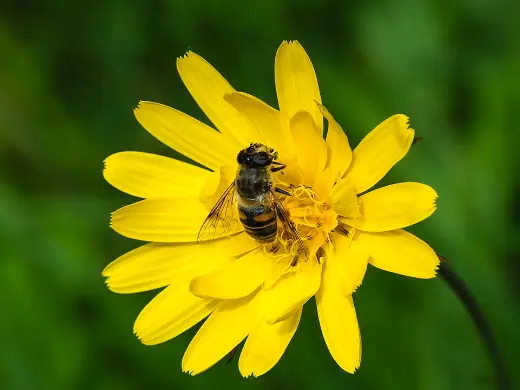

Root or shoot · Apr–Jun
Goat's-beard
Tragopogon pratensis
Also called Gele morgenster
Goat's-beard is a root or shoot you can forage from April to June across the Netherlands. Grassy-leaved meadow plant with yellow flowers that close at noon and huge dandelion-like seed clocks.

When is goat's-beard in season in the Netherlands?
Goat's-beard is usually in season April to June. Timing shifts with weather, latitude and altitude.
Where does goat's-beard grow in the Netherlands?
Goat's-beard grows across the Netherlands. Regions: Coast, dunes and Wadden, West, East, South.
How do you recognise goat's-beard?
Grassy-leaved meadow plant with yellow flowers that close at noon and huge dandelion-like seed clocks.
How do you harvest goat's-beard?
Only dig roots where you have the landowner's permission, since uprooting wild plants is illegal in many places. Take a few from a large patch and backfill the hole.
How do you eat goat's-beard?
Young shoots like asparagus; roots cooked like salsify.
How do you store goat's-beard?
Best fresh.
What is goat's-beard good for?
Calories.